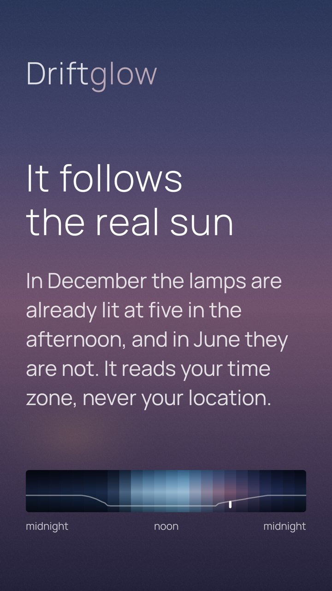
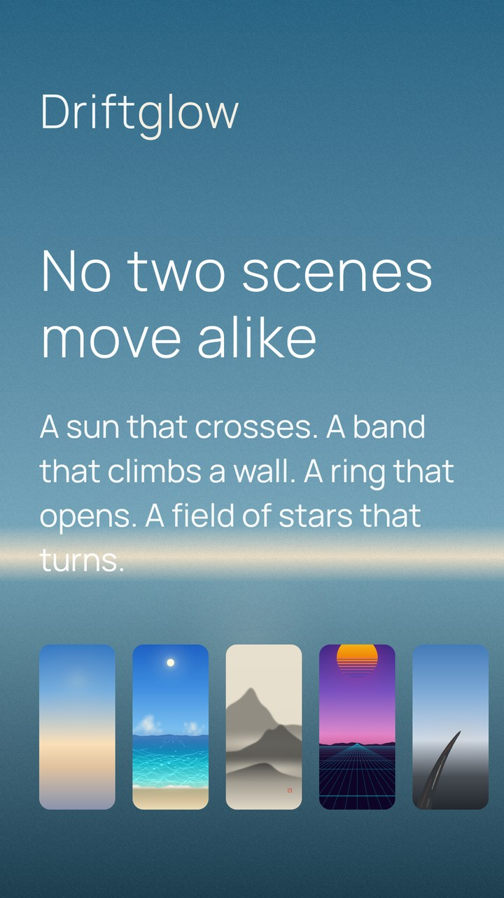
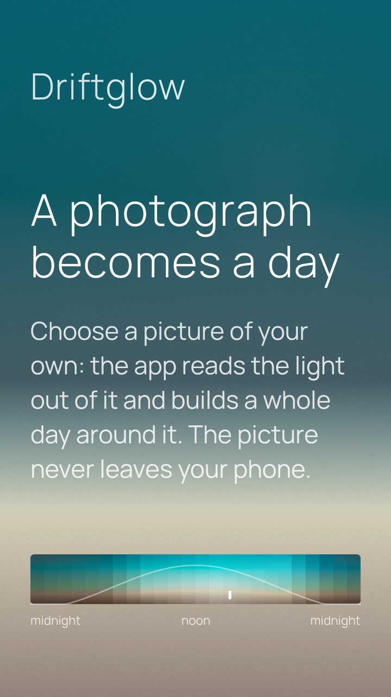
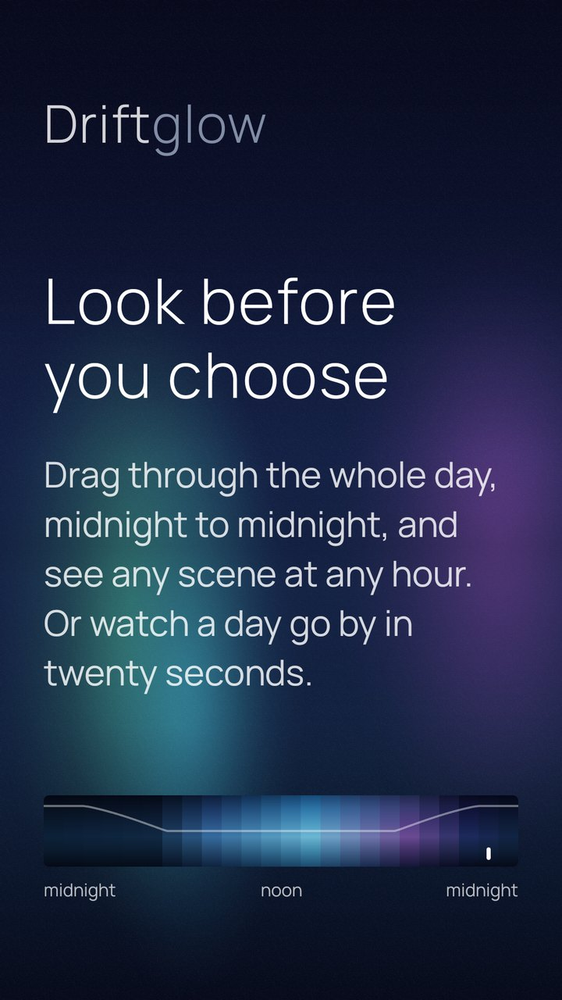
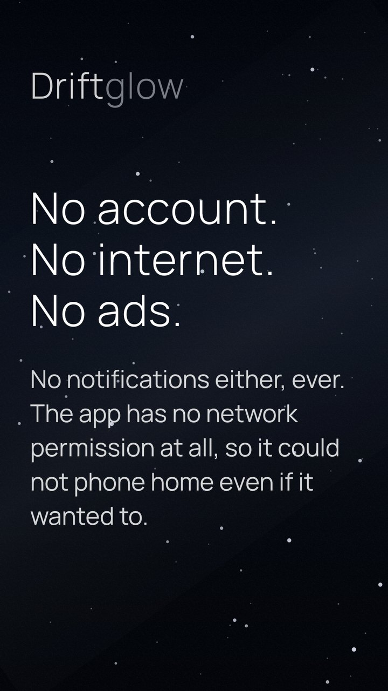
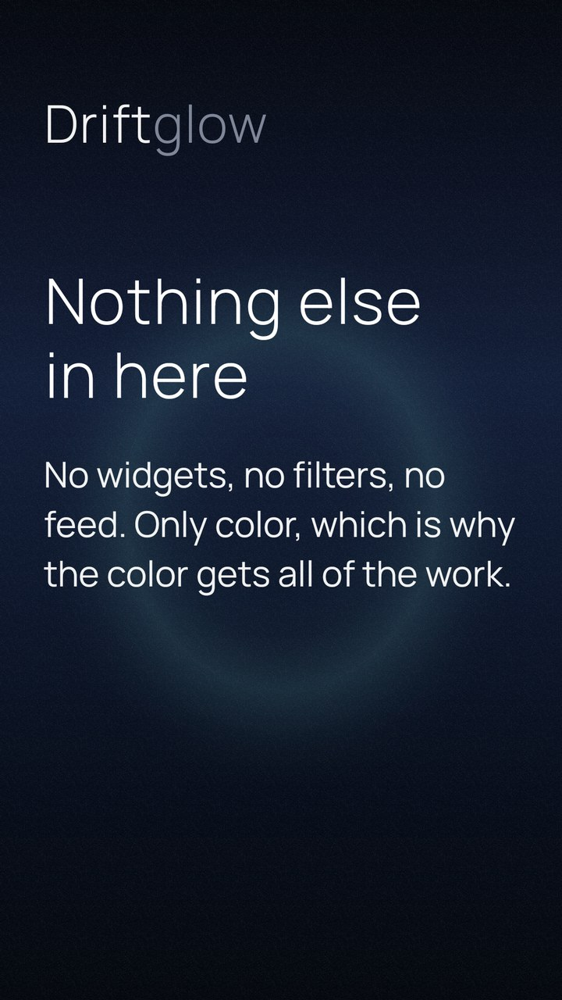

Your wallpaper,
told by the hour.
An Android app that paints your wallpaper from the hour of the day and keeps it up to date on its own. You set it up once and then forget it is there.

Not everywhere, and not all year. Driftglow works out sunrise and sunset for your time zone and stretches the day to fit them: in December the lamps of Harbour are already lit at five in the afternoon, and in June they are not.
It needs no location permission for this. The time zone your clock already uses is enough to place you within a few minutes of the truth.

The scenes are not color schemes over one animation. What moves is different in each: a sun that crosses in Meridian, a band that climbs a wall in Skylight, a ring that opens in Iris, a field of stars that turns four minutes early in Sidereal.
New ones arrive. There is no fixed number, and there is not meant to be one.

Choose a picture of your own and the app reads the light out of it — where each color sits from top to bottom, which colors the picture is really made of, and where its horizon falls — then builds a scene around them.
A photograph is one instant, and a day is not. The hours you did not photograph come from the scene you started with: not its colors, but the way its light changes, applied to yours.
It works best on a picture with a top and a bottom — a landscape, a sky. And when there is a light in the dark, a neon sign or a fire, it finds it: the scene keeps the glow instead of averaging it away.
The picture never leaves the phone. There is no upload, because the app has no way to send anything anywhere.

Drag through the whole day and see any scene at any hour before it becomes your wallpaper. Or let a day run past on its own, twenty-four hours in twenty seconds.
The strip at the top of this page is the same one, with the same numbers behind it.

The only permission Driftglow declares for itself is the one to set a wallpaper. A few more come from the library that wakes it on the hour; none of them can reach the network, and the privacy notice names them one by one.

There is nothing else in here. No widgets, no photos, no filters, no feed. Only color, which is why the color gets all of the work.
Blend two colors the ordinary way and the middle comes out darker than either end, so a gradient sags where it should be even. Driftglow does not do that, and there is no visible banding either, even on the darkest scenes.
Each scene is written as a handful of key colors at six key hours, and everything between them is worked out fresh, every hour, on your phone.
Driftglow works entirely offline, on Android 11 and later.
Not promises, and not dates. The lit part is what is already in your hands. Below it the light runs out, which is the honest way to draw the rest.
In the first version
A new image every hour, on the home screen, the lock screen, or both. You set it up once and then forget the app is there.
Worked out from the time zone your clock already uses, so a December afternoon is short and a June one is not. No location permission.
A sun that crosses, a band that climbs a wall, a ring that opens, a field of stars that turns four minutes early. New ones arrive, and there is no fixed number.
The night ones together, the tropical ones together, a japanese garden, a synthwave night. Turn a set on and the wallpaper takes a different scene from it each day, without being asked.
A gradient on eight bits can show its steps; a little grain breaks them up. Three settings that really look different, and you see all three before choosing — on some scenes the grain is there anyway, because without it the sky would be striped.
It reads the light out of a picture you choose and builds a whole day around it, without the picture ever leaving the phone.
Export and import through the system file picker — the only file the app ever touches, and one you can read.
On the bench
A scene you made is already a small piece of text. Sending that text to a friend, and having their phone show your sky, is mostly a matter of wrapping it well.
Right now the image changes on the hour. A live wallpaper would let the light drift continuously, at the cost of some battery — so it would be a choice, never the default.
Driftglow is in closed testing on Google Play. Thirty-two people using it for a fortnight is what Google asks for before an app from a new developer can be published, so this is the last thing standing between the app and the store.
Never seen it? Five screens, and then you forget it.
It is free, it has no ads and no account, and you can leave the test at any time from the same link.